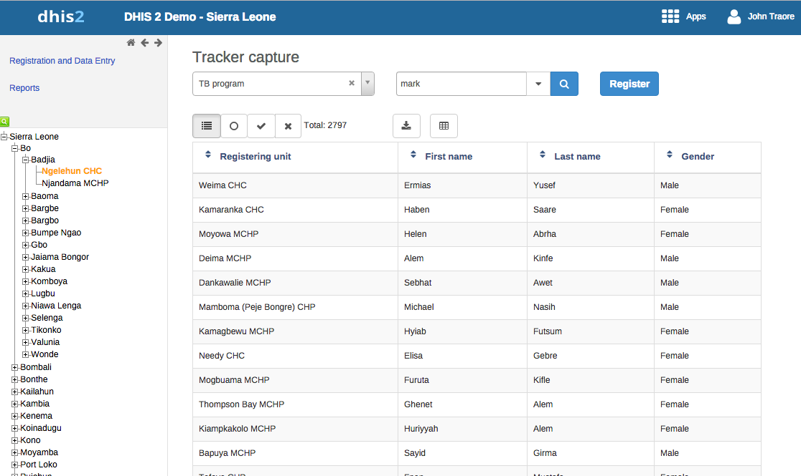

|  |
The Tracker Capture app is an advanced version of the Event Capture app.
Event Capture : handles single events without registration
Tracker Capture : handles multiple events (including single event) with registration.
You capture event data for a registered tracked entity instance (TEI).
You only see programs associated with the organisation unit you've selected and programs you've access to view through your user role.
The options you see in the search and register functions depend on the program you've selected. The program attributes control these options. The attributes also decide the columns names in the TEI list.
If you don't select a program, the system picks default attributes.
Both skip-logic and validation error/warning messages are supported during registration.
When you close an organisation unit, you can't register or edit events to this organisation unit in the Tracker Capture app. You can still search for TEIs and filter the search results. You can also view the dashboard of a particular TEI.